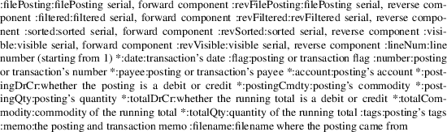

penny - report on postings in financial ledger
penny [global options] report name [report options] FILE...
This manual page is a complete reference for the operation of penny. To get started, see penny-getting-started(1).
The penny program prepares reports based upon the postings in your ledger file. Each transaction has at least two postings. After penny verifies that your ledger file is balanced (that is, every transaction has debits and credits that are equal) penny splits each transaction into its component postings. After this point, penny for the most part deals only with postings, not with transactions.
You may specify global options. Most global options allow you to create a filter expression that determines which postings are ultimately used for the report. The filter expression may also contain additional options that perform tasks other than filtering. For example, you may specify how to perform text matching (for instance, you may want to use regular expressions) or you may specify that you want to sort the postings (by default, they are not sorted and are left in the order in which they were found in the input ledger).
Other global options control the color scheme of the report and whether colors are used at all.
Next you must specify a report. Currently there are three reports. The postings report shows information about each posting, like a checkbook register. There are two reports that show account balances only: the balance report and the convert report. Each report shows only the postings returned by the posting filter expression.
You may then specify options pertaining to the report. The postings report takes many options that format its output and that specify which postings are shown in the report; however, postings that the filter expression returned that are not shown in the report still affect the running balance. This can be useful if, for example, you want to see the total balance in your bank account and how some transactions affect it but you do not want to see all transactions since the beginning of time. The balance and convert reports take many fewer options.
Finally you may specify one or more files from which to draw the data. If you do not specify a file, standard input is used. The report is always printed to standard output.
Entering the data into the ledger files is your responsibility; penny will never modify this data. To see how to enter data into the file, see the file examples/starter.pny, which is included inside the package for penny-bin.
Many options perform comparisons; for example, the --date option compares postings to a date you specify to determine which postings to keep and which to reject. Where comparer appears below, you must supply one of the following strings. You will need to quote many of them, because many of these characters will have special meaning for your shell.
--scheme SCHEME_NAME
Use the given color scheme. By default, three schemes are available: dark, designed for dark-background terminals, light, for light-background terminals, and plain, which uses the terminal’s default colors. By default the dark scheme is used.
--color-to-file no|yes
Whether to use color when standard output is not a terminal. Default is no. If standard output is a terminal, the maximum color capabilities of your terminal are used. (If you do not like color, preface your penny command with TERM=dumb or, alternatively, use --scheme plain, which has the same effect.)
Dates
--date | -d comparer timespec
The date of the posting must be within the time frame given. date is the same format as dates in the penny file and is either a date alone, such as 2012-04-25, or a date and a time, such as 2012-04-25 14:25 -0400.
--current
Same as --date <= right now
Serials
These perform matching based on serials. For more on
serials, see the section SERIALS below. Each option
takes the form option comparer number.
--globalTransaction
--revGlobalTransaction
--globalPosting
--revGlobalPosting
--fileTransaction
--revFileTransaction
--filePosting
--revFilePosting
Pattern
matching
These options allow you to filter postings by specifying a
pattern that must match a particular component of the
posting. By default the simple within matcher is
used, and matches are case-insensitive.
--account | -a pattern
The sub-accounts of the account are separated with colons, and the match succeeds if the pattern matches this entire colon-separated name.
--account-level number pattern
The account is separated into sub-accounts, which are numbered beginning at zero. The match succeeds if the posting has a sub-account numbered at the given level, and if that sub account matches the given pattern.
--account-any pattern
The account is separated into sub-accounts. The match succeeds if the pattern matches any of a posting’s sub-accounts.
--payee | -p pattern
Succeeds if the pattern matches the posting’s payee. If the posting has no payee, the payee of the parent transaction is used (if there is one).
--tag | -t pattern
Succeeds if any one of the posting’s tags matches the given pattern.
--number | -n pattern
Succeeds if the posting’s number matches the given pattern. (This is the number that you specify in parentheses in your ledger file, not the line number or any of the serial numbers.) If the posting has no number, the number of the parent transaction is used (if there is one).
--flag | -f pattern
Succeeds if the posting’s flag matches the given pattern. If the posting has no number, the flag of the parent transaction is used (if there is one).
--commodity | -y pattern
Succeeds if the posting’s commodity matches the given pattern.
--posting-memo pattern
The posting memo must match the given pattern. For the purpose of this option, the line breaks in the posting memo are replaced with spaces.
--transaction-memo pattern
The transaction memo must match the given pattern. For the purpose of this option, the line breaks in the transaction memo are replaced with spaces.
Other
posting characteristics
--debit
The entry must be a debit.
--credit
The entry must be a credit.
--qty | -q comparer number
The entry’s quantity must fall within the given range.
--filename pattern
The filename from which the entry came must match this pattern.
Sibling
postings
All of the postings in a transaction are known as
siblings. Because every transaction has at least two
postings, every posting has at least one sibling. The
options given above examine the characteristics of a
posting. The following options examine the characteristics
of the siblings of a posting; the option will match the
posting if any of its siblings match the specified
information. Otherwise, these options behave similarly to
the corresponding option which does not have the --s-
prefix. Not every filter option has a corresponding
--s- option; for example, there is no --s-date
option because all sibling postings have the same date.
--s-globalPosting
--s-revGlobalPosting
--s-filePosting
--s-revFilePosting
--s-account
--s-account
--s-account-level
--s-account-any
--s-payee
--s-tag
--s-number
--s-flag
--s-commodity
--s-posting-memo
--s-debit
--s-credit
--s-qty
Operators
Each of the options above is a single operand. If you have
multiple operands, you must join them together using
operators. You may use either infix or reverse polish
notation when joining operators (infix is the default.) When
using the --infix or --rpn option, the option
may appear anywhere within the posting filter expression.
--infix
Use infix operators (default)
|
--rpn |
Use reverse polish notation |
Infix
Operators
These are the infix operators, from highest to lowest
precedence. All operators are left associative.
--open expr --close
-( expr -)
Force precedence using parentheses. Enclose a complete expression between the --open and --close options.
--not expr
-N expr
True if expr is false.
expr1 --and
expr2
expr1 -A expr2
True if expr1 and expr2 are both true.
expr1 --or
expr2
expr1 -O expr2
True if expr1 or expr2 is true.
Reverse
polish notation operators
When using RPN, each of the operands shown above pushes that
operand onto the stack. Each operand is a predicate; you can
assemble these predicates into larger predicates. Using the
--open or --close options with RPN is an
error.
|
--and |
|||
|
-A |
Pops two predicates from the top of the stack, creates a new predicate which is true only if both predicates are true, and pushes the new predicate onto the stack. | ||
|
--or |
|||
|
-O |
Pops two predicates from the top of the stack, creates a new predicate which is true if either predicate is true, and pushes the new predicate onto the stack. | ||
|
--not |
|||
|
-N |
Pops one predicate from the top of the stack, creates a new predicate which is true if the original predicate is false, and pushes the new predicate onto the stack. |
Options
affecting patterns
These options affect how patterns are interpreted. The order
of the penny command line is significant; each of
these options only affects patterns that appear after it on
the command line.
-i | --case-insensitive
Patterns are case insensitive (default)
-I | --case-sensitive
Patterns are case sensitive
--within | -w
Use the "within" matcher (default), which matches if the pattern given appears anywhere within the target text. This is a simple letter-for-letter match, not a regular expression, though its case sensitivity is affected by the --case-insensitive and --case-sensitive options.
--pcre | -r
Use the "pcre" matcher, which uses Perl-compatible regular expressions (see pcresyntax(3) and pcrepattern(3))
--exact | -x
Use the "exact" matcher, which matches if the given pattern is a letter-for-letter match of the target text, with case sensitivity determined by the --case-insensitive and --case-sensitive options.
−−show−expression
Show the parsed
posting filter expression.
−−verbose-filter
Verbosely show the results of running the posting filter. This will show you each posting, telling you whether the posting filter accepted or rejected the posting and why.
--head n
Keep only the first n postings.
--tail n
Keep only the last n postings.
--sort | -s key
Sorts postings according to a key. Use multiple --sort options to sort by more than one key. Valid keys are: payee, date, flag, number, account, drCr, qty, commodity, postingMemo, transactionMemo.
The postings are sorted in ascending order if the first letter of the key is lowercase; descending order if the first letter of the key is uppercase.
Postings by default are sorted by date in ascending order; however, any specification of a --sort option on the command line overrides this. For example, --sort payee sorts postings by payee from A-Z, while --sort date --sort payee sorts postings by date from oldest to newest and sorts postings with the same date in payee order from A to Z.
If you want to leave postings in the order in which they appeared in your ledger file, use --sort none.
--help | -h
Show help and exit. If you have configured a custom penny binary (see penny-custom(7)) you might have established defaults that differ from the defaults described in this manual page. The output of penny --help will reflect these customizations.
--version
Show version of the executable and of the penny-lib library (the library might have a different version number).
The postings report, or pos for short, shows postings in order with a running balance. This report takes all the options shown above in the categories from "Posting filters" through "Removing postings after sorting and filtering." These options affect which postings are shown in the report. Postings that are not shown in the report but which were not filtered out in the filtering stage still affect the report’s running balance.
Additional options for the postings report:
Additional
serial filtering options
These options affect which postings are shown. Postings that
were not filtered in the filtering stage but that are not
shown still affect the running balance. In addition to using
the same options that are used for filtering, these
additional options are available that are based on some
additional serials. They take the form option comparer
number . For more information on serials, see the
SERIALS section below.
--filtered
filtered serial, forward component
--revFiltered
filtered serial, reverse component
--sorted
sorted serial, forward component
--revSorted
sorted serial, reverse component
Other
additional options for the postings report
--width num
Gives a hint for roughly how wide the report should be, in columns. (By default the COLUMNS environment variable is used.)
--show field
--hide field
Show or hide fields from the displayed report. Fields are displayed in a fixed order, which is the same as the order that the table below is in. Fields with an asterisk are shown by default.

--show-all
Show all fields
--hide-all
Hide all fields
--zero-balances show|hide
Whether to show the balance of all commodities in the totalDrCr, totalCommodity, and totalQty fields, even if that balance is zero. (default: hide)
--help | -h
Show help and exit
The balance report summarizes the balances in each account that is represented in the postings that remain after the filtering specifications are carried out. You can use sorting specifications in the posting filter expression, but they will have no effect. The accounts are shown hierarchically.
The
balance report accepts the following options:
--zero-balances show|hide
Whether to show balances that are zero (default: hide)
--order ascending|descending
Sort in ascending (default) or descending order by account name
--help | -h
Show help and exit
The
convert report shows account balances after
converting all amounts to a single commodity. In addition to
converting commodities, it also can sort accounts by their
balances. Accepts ONLY the following report options:
--zero-balances show|hide
Whether to show balances that are zero (default: hide)
--commodity | -c TARGET-COMMODITY
Convert all commodities to TARGET-COMMODITY. By default, the commodity that appears most often as the target commodity in your price data is used. If there is a tie, the price closest to the end of your list of prices is used.
--date | -d DATE-TIME
Convert prices as of the date and time given. By default, the current date and time is used.
--sort | -s name|qty
Sort balances by sub-account name (default) or by quantity
--order ascending|descending
Sort in ascending (default) or descending order
--percent | -%
Show each account total as a percentage of the parent account total.
--round | -r PLACES
Like --percent but round to the specified number of decimal places rather than the default of zero places.
--help | -h
Show help and exit
Each posting is
assigned several serials, each of which is a pair of
ordinal numbers. The first number in the pair, or forward
component, is assigned by numbering the transactions or
postings from beginning to end beginning at zero, while the
second number in the pair, or reverse component, is
assigned by numbering the transactions or postings from end
to beginning, beginning at zero. Here are all the serials
that are assigned to each posting.
globalTransaction
All transactions are numbered in order, beginning with those in the first file specified on the command line and ending with the last file. Occurs before the transactions are split into postings.
fileTransaction
Like globalTransaction, but numbering restarts with each new file.
globalPosting
All postings are numbered in order, beginning with those in the first file specified on the command line and ending with the last file.
filePosting
Like globalPosting, but numbering restarts with each new file.
filtered
Postings are numbered after first removing the postings as specified by the filtering options specified on the command line.
|
sorted |
Postings are numbered in order after the sorting options have been applied, which occurs after the filtering options have been applied. |
visible
Postings are numbered in order after removing the postings as specified by the options to the postings report. (Applies only to the postings report.)
This manual page often specifies defaults for various options. These are the defaults that come "out of the box." You may configure your own default options (see penny-custom(7).) If you do that, the defaults you configure will be reflected in the output of penny -h.
0 if no errors; 1 if there was a problem.
Please report any bugs in the software or documentation to omari@smileystation.com.
penny-suite(7)
The file examples/starter.pny in the tarball for the penny-bin package shows you how to write a ledger file.